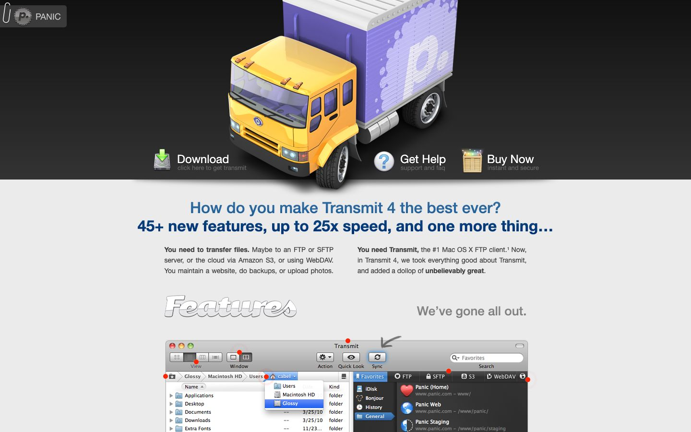

References / Website / 295
Panic Transmit website, 2011
Panic’s page for the Mac FTP app Transmit 4, archived May 2011: a photoreal delivery truck, a paper-clipped logo tab, and chrome lettering.
- Source
- www.panic.com/transmit (archived copy)
- Creator
- Panic
- Made
- 2011
- Style
- Skeuomorphism (agent-proposed, not yet reviewed by a person)
- Moods
- Playful, polished, illustrative
- Evidence
- Captured from the Internet Archive with
tools/capture.mjs(headless Chrome, 1440 × 900) on 28 September 2026 and inspected. The archived page may lack some images or scripts that the live page had. - Reviewed
- Rights
- Third-party work, stored with credit for commentary. License: unverified. Rights policy
Observed
- The top band is a dark gradient with a large photoreal yellow and purple truck, the app’s icon.
- A white Panic logo tab at the top left is held by a drawn paper clip.
- The links Download, Get Help, and Buy Now each have a photoreal icon: a hard disk with a green arrow, a glossy question mark, and a wooden crate.
- The word “Features” is set in outlined chrome script with a bevel and shadow.
- Below, a screenshot of the Transmit window shows a gray gradient toolbar and red callout dots.
Why it belongs
Vertical gradients cover 94% of boxes, but no box has a measured shadow and the pattern shares are 0. The page’s depth is in its illustrations.
Borrow
Clip the logo to the page with a drawn paper clip, as on a document.
Let one large photoreal object carry the metaphor and keep the text area plain.
Measured
Machine-extracted by tools/extract-traits.js on . Full measurement.
- Type families
- HelveticaNeue (85%), HelveticaNeue-Medium (12%), HelveticaNeue-Bold (3%)
- Type scale ratio
- 1.13
- Median radius
- 4 px
- Mean chroma
- 0.05
- Palette
- #ebebeb 39%
- #414141 21%
- #111111 10%
- #333333 10%
- #0d4883 3%
- #8d8d8d 3%
- #d1d1d1 3%
- #3870a3 2%

